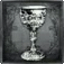
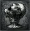
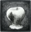

Chalice Dungeon |
|
|---|---|
 |
|
| Lamps per Dungeon | Varies |
| Bosses per Dungeon | 3-4 |
| Drops | Blood Gems, Weapons |
| Multiplayer (MP)? | Co-op & PvP |
| PS+ Required? | No; Yes for MP |
| Creation Location | Hunter's Dream |
| In Yharnam's underground, runs a wide and long expanse of ruins. Frighteningly old,it is believed to have been made by something not human, perhaps a grave, even maybe a resting place. Moreover, it is said that this ruins changes its form depending on its passersby. | |
Chalice Dungeons in Bloodborne are vast underground ruins deep beneath the city of Yharnam. They offer a chance to experience Bloodborne's sense of exploration, danger and reward in all new ways. Hunters can access these multi-leveled dungeons by performing a Chalice Ritual.
Root chalice dungeons are procedurally-generated, whereas other chalice dungeons are fixed in structure. Although the dungeons' layout changes with each ritual performed, each layout is saved and can even be uploaded and shared with friends or the world. Please see the Online page for Co-op and PvP requirements.
Chalice Dungeon Features
- Chalice Dungeons spawn multiple Bosses that the player must defeat in order to clear the Dungeon. It is unclear which bosses the Dungeons will spawn, but see the Chalice Dungeon Bosses page for a list of which can.
- There are special candles that light up blue if you enter a room that you have already visited, helping you not get lost.
- There are Chime Maidens within each Chalice Dungeon that are troublesome if you do not kill them, as they will continually summon more monsters to attack you. The monsters can be identified by the red tint to them, and they will be expunged after killing the Maiden.
- Levers within the Dungeon must be pulled in order to access the lower levels of the dungeon.
- There are Lamps within the Dungeons that act as checkpoints so the player can port back to where they were.
- The dungeon has a very varied architecture, and it's not only vast, but also extensive vertically.
- Strangers are not welcome, so the hallways are ridden with a variety of traps, like giant guillotine blades caked in blood of hunters past, censers - that may hide enemies, treasures or emit poison - or fire spitting statues.
- There are also extensive areas, like a greasy swamp. The liquid seems to be fat forever leaking out of rotten bodies.
- Messengers haunt the Chalice Dungeon too, and there are special areas where many of them gather. They are the proof that the place has been “shared” many times.
- Chalice Rituals must be performed in order to create a Chalice Dungeon, and Chalices determine what type of Chalice Dungeon you will create.
- Chalice dungeons can also be a lucrative way to earn more blood echoes as creatures will frequently drop more ritual materials, some of which will sell for a high amount.
Chalice Dungeon General Information
- Only Root Chalices provide randomly generated dungeons, the others are fixed.
- Chalice Dungeons do NOT scale with NG+.
- The depth of a dungeon represents its difficulty, with 1 being easy and 5 being extremely difficult.
- Areas in chalice dungeons while sometimes are dynamic in enemies and architecture, always have indicators depicting your location on the dungeon floor. A chalice dungeon floor can be divided by into four areas. The pre-area, the main area, boss room hallway, and the post-area. Yellow lanterns usually signify the end of an area, and the start of another. ex. pre-area> main area>hallway to the boss room > boss room>post-area
- The pre-area consists of an entry room, a hallway leading to the main area, and sometimes a door leading to an alternate path. The beginning room of the first floor contains a purple lamp, and all subsequent floors begin with elevator rooms with a call lever. The yellow lanterns indicate the gate to the main area, while red lanterns indicate an alternate path. This area sometimes has one or two bonus rooms, indicated by a door on the side of the hallway. There is a chance for a sarcophagus or treasure room, which is where you will find unique loot or chalice materials.
- The main area is located after the first set of yellow lanterns, this is a location that sometimes has sarcophogi, and always has a switch to unlock the hallway to the boss room. The gate to the next hallway is always locked by default, and unlocking it is always necessary to proceed to the next area. The gate starts off with purple lanterns, which means the boss room is locked until the switch is activated. Once the switch is activated, the lanterns of the gate turn blue, indicating that the gate is now unlocked.
- The hallway to the boss room is just that; a passage ending with the boss room. Follow the yellow lanterns and open the heavy double doors to engage the boss. This hallway sometimes contains a path to a bonus room, indicated once again by red lanterns.
- The post-area is where the boss resides. Defeating the boss causes a purple lantern to appear, and eliminates the fog blocking you from the double doors and the door to the elevator room. Note: if you are on the very last floor of a dungeon then there will NOT be an elevator room, the floor will simply end with the boss room. The post-area sometimes contains a bonus room.
- Bonus rooms are areas located in a chalice dungeon floor either before or after the main area. The chance for a bonus room appearing is random for some dungeons. These bonus rooms often have rare ingredients for chalice rituals, contained in normal chests. Sometimes uncanny or lost weapons are found located in sarcophagus shaped chests. The type of chest you might find is just as random as the bonus room appearing.
- Additional items can be added to some Chalice Rituals increasing the difficulty of the dungeon but upping the drop rate of Blood Gems inside. Fetid Offerings gives a damage buff to the enemies inside, Rotted Offering adds enemies to the dungeon and increases the likelihood there will be traps, Cursed reduces your HP by half and makes all Blood Gems that drop Cursed, and Sinister Bell makes it so you can be invaded.
- Pthumeru Chalices drop Radial Blood Gems, Loran Chalices drop Waning Blood Gems, and Isz Chalices drop Triangular Blood Gems.
- You do not need to activate any of the purple lanterns to proceed through the dungeon, but you will not respawn at those points if they are not activated.
- Some dungeons, like Pthumeru Depth 3, have four floors.
- If an enemy is killed with a visceral attack, there is a chance a Bloodsucking Beast will be summoned. When the player leaves the room and returns, this enemy may be found lapping up the blood.
Chalice Dungeon Multiplayer Information
- In order to Co Op a Chalice Dungeon you must have created the Chalice of that Dungeon yourself at least once. You CANNOT join Chalice Dungeons that are using Chalices you have not yet acquired and made.
- You can Co Op with a friend by giving them your Chalice Glyph or by them giving you theirs and entering it in at a Ritual Altar in Hunter's Dream.
- All Chalice Dungeons can be Co Oped, but only some can be PvPed. In order for PvP in a Chalice Dungeon, the player must have created or joined a Dungeon that was made using a Root Chalice or a Sinister Chalice. There is one Sinister Chalice of each type: Pthumeru, Hintertomb, Loran and Isz.
- You can set a chalice dungeon to shared and closed, and only people with the glyph will be able to PvP or Co Op. However they will need to manually move to the location of the host, requiring them to clear the dungeon.
- It is important to remember that only the host's progress is saved, so in order to clear the entire dungeon you will have to take turns hosting and being summoned. Summoned players vanish after each boss is defeated.
- Once you have defeated the last boss of the Pthumeru Chalice, the Short Ritual Root Chalice will be purchasable from the insight messenger bath in the Hunter's Dream. This special chalice can be used at the Makeshift Altar in Hunter's Dream to quick-search for Chalice Dungeons to join as the guest, host or invader. You can use the Short Ritual Root Chalice Co-Op search feature with a password (to help connect to the desired target) to be summoned in their dungeon at ANY layer they are in. Whatever chalice they are in gets placed at the Makeshift Altar, granting you a FREE dungeon to go through from the start if you wish. You can remove the chalice that is placed in the Makeshift Altar and begin your Co-Op search anew for any other people you may want to help. In addition Co-Op through the SRRC method has a chance of placing you in a completely random room of the dungeon. In order for this to work the Chalice Dungeon must be SHARED AND OPEN (not Closed)
- If one left the Chalice for too long (not playing the host character for more than a week) and no one possess your shared glyph, the Chalice will be deleted from the server, rendering the Chalice unavailable for co-op, if one logged out inside a chalice deleted from the server, the character's save data will be CORRUPTED due to the absence of glyph data.
- It is possible to duplicate your own Chalice Dungeon by copy and paste the glyph you generated at "Search by Chalice Glyph", this allows you to farm the items or even create your own server.
Chalices in Bloodborne are Items the player uses to create versions of Chalice Dungeons. The player will add the Materials required to the Chalice in the Hunter's Dream's Ritual Altars to create that Dungeon. Dungeon Depth indicates difficulty. The greater the Depth the greater the difficulty. Additional Rites can be used on creation, altering the dungeon's content. Root Chalices will create Dungeons with varying loot, bosses and layout where as non-Root Chalices will have the same parameters for all players.
Chalices
Pthumeru Chalices


 Hintertomb Chalices
Hintertomb Chalices


Loran Chalices


Isz Chalices
| Name, Icon, Depth, Area |
Materials Needed |
Offerings |
Location |
|---|---|---|---|
 Great Isz Chalice Great Isz ChaliceDepth: 5 Area: Isz |
Ritual Blood (5) x9 Pearl Slug x3 Arcane Haze x25 Blood Echoes x11,500 |
None |
Kill Ebrietas, Daughter of the Cosmos. |
 Isz Root Chalice Isz Root ChaliceDepth: 5 Area: Isz |
Ritual Blood (5) x13 Tomb Mold (5) x5 Pearl Slug x3 Red Jelly x1 Blood Echoes x11,500 |
Fetid: Sage's Hair x6 Rotted: Yellow Backbone x6 Curse: Bastard of Loran x3 |
Kill Ebrietas, Daughter of the Cosmos in Great Isz Chalice (Layer 3.) |
 Sinister Isz Root Chalice Sinister Isz Root ChaliceDepth: 5 Area: Isz |
Ritual Blood (5) x13 Tomb Mold (5) x5 Pearl Slug x3 Red Jelly x1 Blood Echoes x11,500 |
Sinister Bell: Arcane Haze x32 |
Sold by Messengers for 20,000 Blood Echoes inside Great Isz Chalice. (Layer 3.) |
Miscellaneous Chalices (Moved to key items and has updated information)
| Name,Icon,Depth,Area | Materials Needed | Offerings | Location |
 Short Ritual Root Chalice Short Ritual Root Chalice |
none | Any | -Currently available through: Messenger insight shop for 10 Insight (it is stated in item main page that "after defeating the third layer boss in Central Pthumeru", however this needs to be confirmed). -Refer to key items for updated and old information. -After patch v1.04, this item is not longer considered a chalice item. It is now a key item and the Pthumerian Elder drops a gem as of the most current patch. More details can be obtained in the key items section for this item. |
How to get every chalice (chart by anonymous)